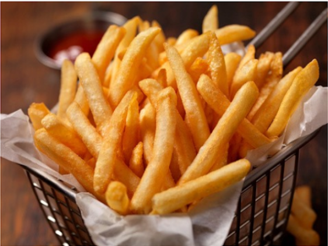

Patatas fritas
Receta de Patatas fritas caseras

Ingredientes
3 o 4 patatas(300g.)
4 dientes de ajo
Aceite de oliva
Sal
Elaboracion(Pasos)
Calentar aceite en una sartén.
Añadir las patatas cortas, la sal y los ajos.
Freir al gusto
Servir en plato